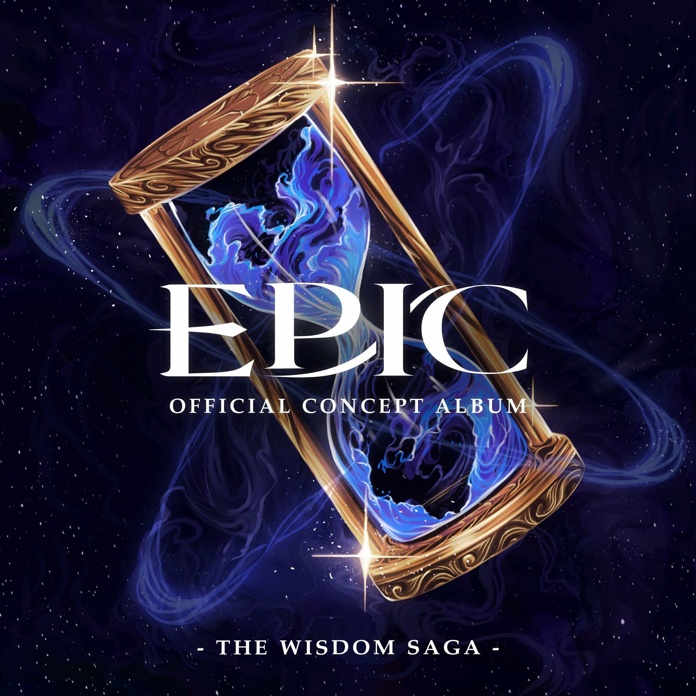

| Liebe im Paradies | |
|---|---|
|  | |
| Song Information | |
| Song Nr. | 29 |
| Akt (Saga) | Akt 2 (Weisheits Saga) |
| Gesungen von: | Mike Hinterlechner |
| Epic: German Ensemble | |
| Charaktere | Odysseus |
| Athene | |
| Aiolos | |
| Poseidon | |
| Kirke | |
| Tiresias | |
| Griechische Soldaten | |
| Skylla | |
| Eurylochos | |
| Kalypso | |
| Polites | |
| Antiklea | |
| Übersetzt von | Mike Hinterlechner |
| Chronologie | |
| Vorheriger | Uns wird's gut geh'n |
| Nächster: | Götter Spiele |
Liebe im Paradies
Liebe im Paradies ist der vierte Song der Weisheits Saga. In diesem Song taucht Athene in Odysseus Erinnerungen um zu erfahren, dass dieser die letzten sieben Jahre auf der Insel von Kalypso gefangen war.
Songtext
| Original Text | Deutscher Text |
|---|---|
|
[ATHENE]
Old friend It's been ten years since I last saw you [ODYSSEUS] Remember me! I am the infamous Odysseus! [ENSEMBLE] Oh, woah, woah [ATHENE] Let's see where you've been [AIOLOS] Keep your friends close and your enemies closer [POSEIDON] Ruthlessness is mercy upon oursel- [KIRKE] One wrong move and you're done for Anything I- [TIRESIAS] Song of past romance, I see the [SOLDATEN] We won't take more suffering from you [SKYLLA] Drown in your sorrow and fears [EURYLOCHUS, gesprochen] Captain? [ODYSSEUS, gesprochen] ...I have to see her. [EURYLOCHUS, gesprochen] ...But we'll die. [ODYSSEUS, gesprochen] ...I know. [ATHENA, gesprochen] Odysseus, where did you go? [KALYPSO] Morning, sleepyhead You've been resting for a while I swore that you were dead When you washed up on my isle Did you know you talk in your sleep? Tell me, though, who's Penelope? [ODYSSEUS] She's my wife [KALYPSO] Anyways, I've got all you could want here All you could need here Just you and me, my dear, my love for life Soon, into bed we'll climb and spend our time [ODYSSEUS] I'm not your man [KALYPSO] I'm what you want here I'm what you need here Just you and me, my love in paradise Now 'til the end of time From here on out, you're mine, all mine [ODYSSEUS] Hell no, I could kill you where you stand I'm no pet, I'm a married man [KALYPSO] Oh handsome, you may try But last I checked, goddesses can't die [ODYSSEUS] Goddess? [KALYPSO] You're adorable Bow down now to the immortal Calypso, here to entertain But fear not, I bring no pain Cause we've got All we could want here All we could need here Under my spell, we're stuck in paradise No one can come nor go, my island stays unknown [ODYSSEUS] No, no I don't belong here There's something wrong here I won't be drawn to love in paradise Not 'til the end of time, there is no way [KALYPSO] You're mine, all mine [ATHENE] Seven years, she's kept you trapped, out of your control Time can take a heavy toll [KALYPSO, gesprochen] Odysseus? [ODYSSEUS] All I hear are screams [KALYPSO, gesprochen] Ody, get away from the ledge! [ODYSSEUS] You don't know what I've gone through You don't know what I've sacrificed Every comrade I long knew Every friend, I saw them die And all I hear are screams [KALYPSO] It will be fine, dear Come back inside, dear Love of my life, come back to paradise [ODYSSEUS] Let me close my eyes [KALYPSO] I know your life's been hard I'll stay inside your heart [ODYSSEUS] All I hear are screams [KALYPSO, ODYSSEUS] I love you, my dear I love our time here Life would be so much worse Just let me close my eyes If you had died Please stay from away from harm Stay in my open arms All I hear are... [POLITES, EURYLOCHUS, ANTIKLEA, ODYSSEUS] This life is amazing when you greet it with open arms How much longer 'til your luck runs out? Waiting, waiting, waiting Whatever we face, we'll be fine if we're leading from the heart How much longer 'til the show goes south? Oh No matter the place, we can light up the world Here's how to start How much longer 'til we all fall down? Oh Waiting, waiting, waiting Greet the world with open arms, greet the world with open arms [ODYSSEUS] ATHENA!!! [ATHENE] He needs my help... |
[ATHENE]
Mein Freund Es war'n zehn Jahre seit ich dich sah [ODYSSEUS] Denk stets an mich! Ich bin der berüchtigte Odysseus! [ENSEMBLE] Oh, woah, woah [ATHENE] Seh'n wir wo du warst [AIOLOS] Halt dir Freunde nah deine Gegner näher [POSEIDON] Grausamkeit ist Gnade für uns selbst [KIRKE] Falscher Zug, bist erledigt Alles was ich- [TIRESIAS] Liebe wie sie blüht, ich seh ein [SOLDATEN] Wir neh'm eure Qualen nicht mehr an [SKYLLA] Du weist wie wenig das bringt [EURYLOCHUS, gesprochen] Captain? [ODYSSEUS, gesprochen] ...Ich muss zu ihr. [EURYLOCHUS, gesprochen] ...Aber dann sterben wir. [ODYSSEUS, gesprochen] ...Ich weis. [ATHENA, gesprochen] Odysseus, wo bist du hin? [KALYPSO] Morgen, Schlafmütze Du schläftst wirklich ganz schön lang Ich schwor du warst tot Als du angeschwommen kamst Wusstest du, du sprichst wenn du schläfst? Sag mir doch, wer is' Penelope? [ODYSSEUS] Meine Frau [KALYPSO] Jedenfalls, ich hab alles was du willst hier Alles was du brauchst hier Nur du und ich, mein Schatz in Ewigkeit Bald springen wir ins Bett, es ist so weit [ODYSSEUS] Ich bin nicht dein Mann [KALYPSO] Ich bin was du willst hier Ich bin was du brauchst hier Nur du und ich, die Liebe im Paradies Jetzt bis in Ewigkeit Von jetzt an gehörst du mir, nur mir |
Trivia
- Der "Zeit Sprung" hat Ausschnitte aus den Songs Denkt stets an sie, Halt dir Freunde nah, Grausamkeit, Erledigt, Nicht mehr du, Skylla und Donner Bringer.
- Die Zeile "Ich bin nicht dein Mann" wird ähnlich gesungen wie "bin nur ein Mann"
- Die Zeilen "I'll stay inside your heart" und "Stay in my open arms" sind Anspielungen auf Antiklea und Polites.
- Die Zeile "Just let me close my eyes" ist eine Parallele zur Zeile "Bleib einfach nur wach" in der Traum Sequenz in Halt dir Freunde nah.
- Odysseus mentaler Zusammenbruch wird durch Reprisen durch Off'ne Arme, Glück geht aus und Die Unterwelt dargestellt.
- Im Hintergrund kann man auch Penelope's Thema hören, aber nicht ihre Stimme. In Spekulationen glaubt man, dass das bedeuten soll, dass er sich an seine Frau noch erinnert, aber nicht mehr an ihre Stimme.
- Odysseus' Motif ist auch leise hörbar in seinem Zusammenbruch, nur dass es sich schwach und leise anhört, was seinen mentalen Zustand widerspiegelt.
- Das ist der einzige Song in der Weisheits Saga in dem Odysseus vorkommt.